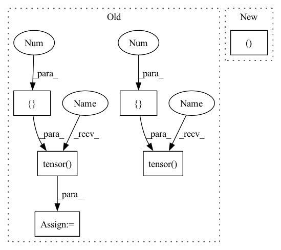

Pattern ID :27902

Before Change
def test_binary_accuracy():
x = torch.tensor([-3., 0., 19., -12., 23., 1. -1., -1.]).unsqueeze(dim=-1)
y = torch.tensor([1, 1, 1, 0, 1, 0, 0])
task_mock = Task(decoder=BinaryDecoder(), activation=nn.Sigmoid(), labels=None, loss=None, name="mock_task", per_sample_loss=None)
metric = Accuracy()
metric.bind_to_task(task_mock)
After Change
def test_binary_accuracy(simple_binary_data):
x, y, task_mock = simple_binary_data
metric = Accuracy()
metric.bind_to_task(task_mock)
In pattern: SUPERPATTERN
Frequency: 3
Non-data size: 6
Instances
Fragment ID: 82842352
Project Name: hristo-vrigazov/dnn.cool
Commit Name: 332feb6508559af41d5304f5b3f71321e5fc9bb2
Time: 2020-08-11
Author: hvrigazov@gmail.com
File Name: tests/test_metrics.py
M Class Name: AnonimousClass
N Class Name: AnonimousClass
M Method Name: test_binary_accuracy(1)
N Method Name: test_binary_accuracy(0)
M Parent Class:
N Parent Class:
M File Name: tests/test_metrics.py
N File Name: tests/test_metrics.py
M Start Line: 11
M End Line: 14
N Start Line: 20
N End Line: 21
'>
Before Change
observer = APoTObserver(b=8, k=1)
observer.forward(tensor2quantize)
observer.min_val = torch.tensor([0])
observer.max_val = torch.tensor([255])
alpha, gamma, quantization_levels, level_indices = observer.calculate_qparams(signed=False)
// get apot quantized tensor result
qtensor = quantize_APoT(tensor2quantize=tensor2quantize,
After Change
// get uniform quantization quantized tensor result
uniform_observer = MinMaxObserver()
uniform_observer(tensor2quantize)
scale, zero_point = uniform_observer.calculate_qparams()
uniform_quantized = quantize_per_tensor(input=tensor2quantize,
scale=scale,
'>
Fragment ID: 82842336
Project Name: pytorch/pytorch
Commit Name: 0d25915836f9c124d87e654d667821d451a7af12
Time: 2022-07-19
Author: amandaliu@fb.com
File Name: test/quantization/core/experimental/test_quantizer.py
M Class Name: TestQuantizer
N Class Name: TestQuantizer
M Method Name: test_quantize_APoT_rand_k1(1)
N Method Name: test_quantize_APoT_rand_k1(1)
M Parent Class: unittest.TestCase
N Parent Class: unittest.TestCase
M File Name: test/quantization/core/experimental/test_quantizer.py
N File Name: test/quantization/core/experimental/test_quantizer.py
M Start Line: 26
M End Line: 29
N Start Line: 25
N End Line: 41
'>
Before Change
def test_binary_accuracy():
x = torch.tensor([-3., 0., 19., -12., 23., 1. -1., -1.]).unsqueeze(dim=-1)
y = torch.tensor([1, 1, 1, 0, 1, 0, 0])
task_mock = Task(decoder=BinaryDecoder(), activation=nn.Sigmoid(), labels=None, loss=None, name="mock_task", per_sample_loss=None)
metric = Accuracy()
metric.bind_to_task(task_mock)
After Change
def test_binary_accuracy(simple_binary_data):
x, y, task_mock = simple_binary_data
metric = Accuracy()
metric.bind_to_task(task_mock)
'>
Fragment ID: 82842356
Project Name: hristo-vrigazov/dnn.cool
Commit Name: 332feb6508559af41d5304f5b3f71321e5fc9bb2
Time: 2020-08-11
Author: hvrigazov@gmail.com
File Name: tests/test_metrics.py
M Class Name: AnonimousClass
N Class Name: AnonimousClass
M Method Name: test_binary_accuracy(1)
N Method Name: test_binary_accuracy(0)
M Parent Class:
N Parent Class:
M File Name: tests/test_metrics.py
N File Name: tests/test_metrics.py
M Start Line: 11
M End Line: 14
N Start Line: 20
N End Line: 21
'>
Before Change
:param use_unsigned_symmetric: Whether to use signed/unsigned in symmetric case
:return: Tuple of delta and offset and num_steps
num_steps = torch.pow(torch.tensor([2], device=encoding_min.device), bitwidth) - 1
if use_symmetric_encodings and use_strict_symmetric:
num_steps -= 1
// NOTE: This assumes that the use_* flags reflect true condition (regardless of the encoding_* values)
if use_symmetric_encodings and (not use_unsigned_symmetric):
// signed symmetric
absmax = torch.max(torch.abs(encoding_min), torch.abs(encoding_max))
half_num_steps = torch.div(num_steps, 2)
delta = absmax / torch.floor(half_num_steps)
offset = -torch.ceil(half_num_steps)
else:
delta = (encoding_max - encoding_min) / num_steps
if use_symmetric_encodings:
// unsigned symmetric
offset = encoding_min / delta
else:
// asymmetric
b_zero = torch.round(-encoding_min / delta)
b_zero = torch.min(num_steps, torch.max(torch.tensor([0], device=encoding_min.device), b_zero))
offset = torch.tensor(-b_zero, device=encoding_min.device)
return delta, offset, num_steps
After Change
b_zero = torch.min(num_steps_tensor, torch.max(zero_tensor, b_zero))
offset = -b_zero.clone().detach()
return delta, offset, num_steps_tensor
def _compute_variables_for_range_learning(tensor: torch.Tensor,
bitwidth: int,
'>
Fragment ID: 82842334
Project Name: quic/aimet
Commit Name: d26dbba1690dee6af39dcf88fbea5308ec1b65ce
Time: 2022-11-23
Author: quic_geunlee@quicinc.com
File Name: TrainingExtensions/torch/src/python/aimet_torch/quantsim_straight_through_grad.py
M Class Name: AnonimousClass
N Class Name: AnonimousClass
M Method Name: get_computed_encodings(6)
N Method Name: get_computed_encodings(6)
M Parent Class:
N Parent Class:
M File Name: TrainingExtensions/torch/src/python/aimet_torch/quantsim_straight_through_grad.py
N File Name: TrainingExtensions/torch/src/python/aimet_torch/quantsim_straight_through_grad.py
M Start Line: 336
M End Line: 359
N Start Line: 315
N End Line: 340